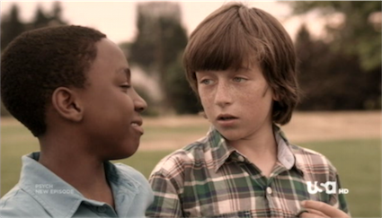
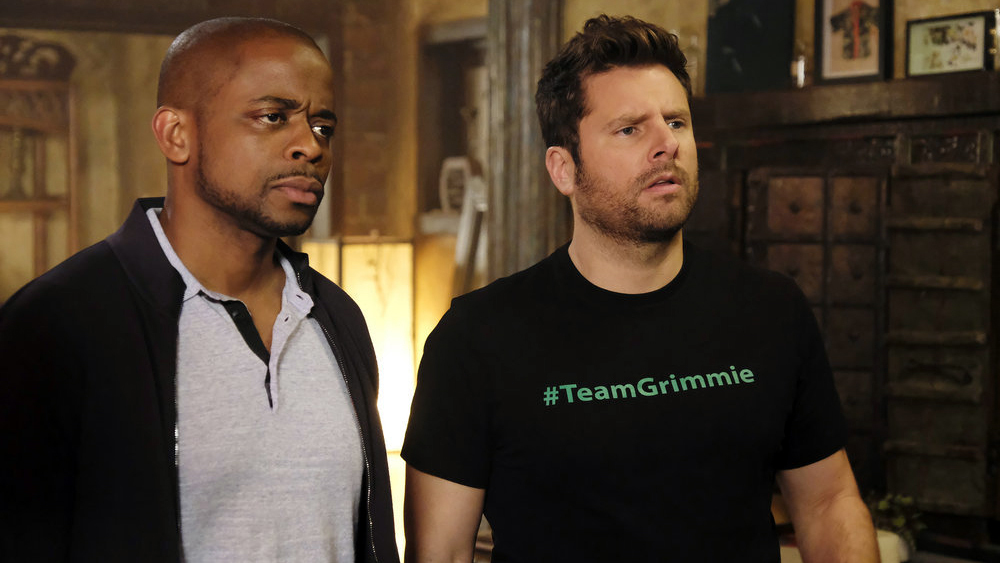

About
Psych is an American detective comedy-drama television series created by Steve Franks and broadcast on USA Network with syndicated reruns on ION Television.[1] The series stars James Roday as Shawn Spencer, a young crime consultant for the Santa Barbara Police Department whose "heightened observational skills"[2] and impressive eidetic memory allow him to convince people that he solves cases with psychic abilities. The program also stars Dulé Hill as Shawn's intelligent best friend and reluctant partner Burton "Gus" Guster, as well as Corbin Bernsen as Shawn's father, Henry, a former officer of the Santa Barbara Police Department.[3]

Psych debuted on Friday, July 7, 2006, immediately following the fifth-season premiere of Monk, and continued to be paired with the series until Monk's conclusion on December 4, 2009. During the second season, an animated segment titled "The Big Adventures of Little Shawn and Gus" was added to the series. Psych was the highest-rated US basic cable television premiere of 2006.[4] USA Network renewed the series for an eighth season on December 19, 2012, to include eight episodes, and ordered two more episodes on June 25, 2013, bringing the episode order to ten.[5][6] On February 5, 2014, USA Network confirmed that the eighth season of Psych would be its last, with the series finale airing on March 26, 2014.[7]
The show has developed a cult following, especially in the years since going off air, with fans of the show being called "Psych-O's".[8][9] Psych: The Movie, a two-hour TV movie, aired on USA Network on December 7, 2017.[10] Franks' hope is to make five more Psych movies, following Psych: The Movie.[11] On February 14, 2019, it was announced Psych: The Movie 2 was greenlit and all the main cast would return for the TV movie, set to premiere in 2019.[12]
Overview
Most episodes begin with a cold open in the form of a flashback to Shawn and Gus's childhoods. The flashbacks usually involve Shawn and Gus being taught a lesson by a young Henry Spencer (Shawn's father), who wishes that his son would follow in his footsteps and become a law enforcement officer. These lessons often play a role for the climax of the episode. As a child, Shawn was taught by Henry to hone his powers of observation and deduction, often using games and challenges to test him. Each flashback also sets the theme for the episode.
Shawn originally becomes known as a psychic when, after calling in tips on dozens of crimes covered on the news which help the police to close the case, the police become suspicious of his knowledge. The police theorize that such knowledge could only come from the "inside" and they decide to arrest him as a suspect. To avoid being sent to jail, Shawn uses his observational skills to convince the police that he is psychic. The interim police chief warns Shawn that if his "powers" are fake, he will be prosecuted. With no choice but to keep up the act, and having proven himself an effective aid to the police in solving crimes, he establishes a psychic detective agency, Psych, and becomes an outside consultant to the police. Pretending to have psychic powers allows him to engage in strange and comic behavior as he turns real clues into hunches and otherworldly visitations. He enjoys teasing lifelong friend Burton Guster (Gus), a pharmaceutical sales representative, about Gus's eclectic interests as they drive around in a blue Toyota Echo nicknamed "The Blueberry"[13] solving crimes.
Characters
Shawn Spencer (James Roday) is a freelance consultant with the Santa Barbara Police Department who pretends to be a psychic. However, really his exceptional observational skills and eidetic memory allow him to obtain his "visions". He refuses to take anything seriously, but has matured slowly throughout the seasons. He has had romantic tension with Juliet O'Hara since they met, which led them to start dating in the middle of season five. In the middle of season six, he tries to propose to her, but finds out that neither of them is ready. Though the two hit a bump in season seven when she discovers he is not psychic, they soon reconcile. When she moves to San Francisco to be Vick's head detective, he realizes he cannot live without her and resolves to move there. In a final effort to "come clean", he makes several DVDs, one of which he sends to Lassiter, upon which he starts to confess the truth to him, but Lassiter breaks the DVD before Shawn can say it.
Burton "Gus" Guster (Dulé Hill) is Shawn's best friend since childhood, as well as business partner. He is also a pharmaceuticals salesman. Unlike Shawn, he takes his work very seriously, playing the "straight man" and usually tries to act professionally, yet in later episodes, he ends up as invested in jokes and snacks as Shawn. He is famous for his many aliases (usually given to him by Shawn), including "Magic Head", "Lavender Gooms", "Ghee Buttersnaps", and "Control Alt Delete". He is known for being attracted to all types of women, who often end up being the criminal. He is also known for his supersensitive nose, the "Super Sniffer" or "Super Smeller." He is also usually very sensitive, and has a gigantic soft side. He has often been shown as a sympathetic crier, and once even as a sympathetic sweater (in season 7).
Juliet "Jules" O'Hara (Maggie Lawson) is a junior detective for the Santa Barbara Police Department, and is Lassiter's partner. She joined the SBPD after Lassiter's old partner got transferred after the pilot episode, and was originally a cop in Miami. Throughout the series, Shawn and she share constant romantic tension. The two start dating in season five, but hit a bump when she discovers his secret in season seven. The bump is only temporary, though, and the two resume dating near the end of season seven. When Lassiter is promoted to chief in season eight, he wants Juliet as head detective, but is told he cannot have her. So, she instead accepts a job as Vick's chief detective in San Francisco. In the final episode of the series, "The Break-Up", she accepts Shawn's marriage proposal right before the engagement ring he inherited from his grandmother is stolen.